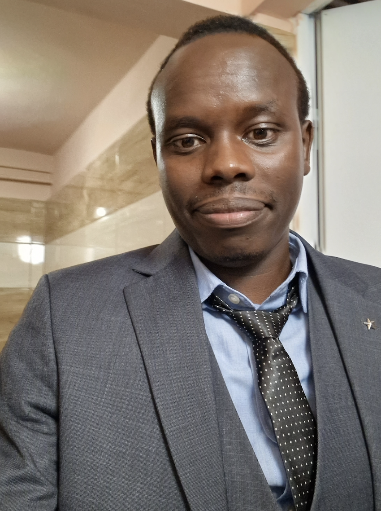

About

Junior Research Fellow in Applied Mathematics at the University of Szeged, Hungary. My research focuses on
mathematical and computational modeling of infectious diseases, social contact patterns, and actuarial science.
New: Research Student Fellow (Oct 2025 – Nov 2027) at Amref International University,
working on the EU‑funded Migration and Displacement Action Plan for Sub‑Saharan Africa (MAPS).
I study migration and forced displacement in Kenya through mixed‑methods fieldwork, survey design, and
data analysis in collaboration with local and international supervisors.
Research
Mathematical Epidemiology
Modeling infectious disease dynamics, sensitivity analysis of age-structured contact matrices, and interventions.
Migration & Displacement (MAPS)
Mixed‑methods research on migration and forced displacement in Kenya within the EU‑funded MAPS project:
desk research and gap analysis, stakeholder consultations, instrument design (surveys, interviews, FGDs),
field data collection, and policy‑relevant analysis.
Actuarial Science & Finance
Quantitative risk modeling, data-driven cluster analysis, and uncertainty quantification in insurance.
Data Science
Machine learning and applied data analysis for complex systems and decision support.
Projects
Part of a Sub‑Saharan Africa research consortium coordinated with European partners. I support the Kenya stream,
focusing on evidence for policy and practice on migration and forced displacement.
Focus & Methods
- Desk research & comprehensive gap analysis
- Stakeholder consultations (govt, CSOs, practitioners)
- Survey instruments, interview guides, FGD protocols
- Fieldwork: online & face‑to‑face surveys; qualitative interviews
- Quantitative & qualitative analysis; dissemination
Timeline
- Preparatory phase: Oct 2025 – Feb 2026
- Research phase: Mar 2026 – Nov 2027
Planned Outputs
- Gap analysis & fieldwork reports
- Survey reports and data documentation
- At least one peer‑reviewed publication by 2027
- Conference presentations and policy‑oriented briefs